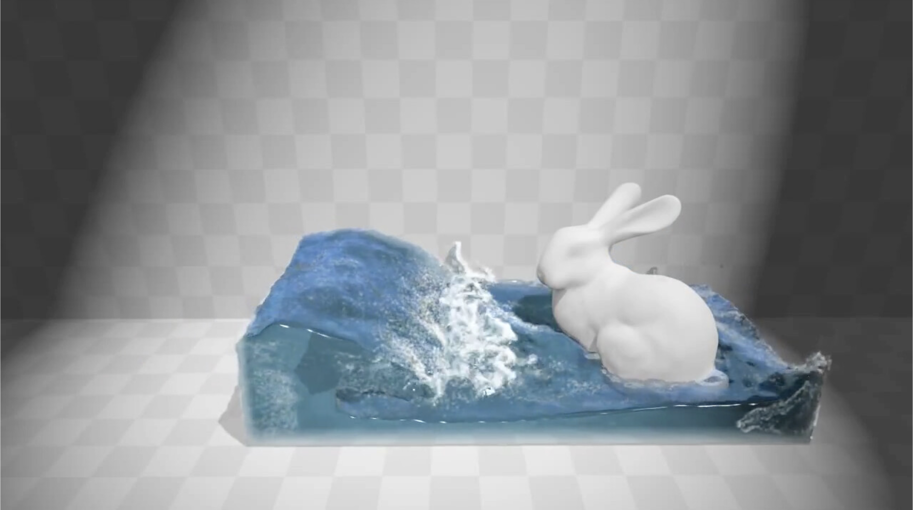

CS 184: Computer Graphics and Imaging, Spring 2023
Particle Based Fluid Simulation
Henry Li, Nakul Srikanth, Aidan Sussman, and Justin Wang

Results Caption: my bunny is the bounciest bunny
Problem Description
We want to create a particle-based fluid simulator that can output animations. Fluid simulations have many applications in aeronautics, hydrodynamics, aerospace, and also just because it looks pleasing. Fluid behavior is difficult to simulate because its behavior is governed by many different interactions and laws, and simulations are at best an approximation for observed behavior. We are going to solve this by applying approximations of laws and behaviors to particles on many discrete timesteps.
Goals and Deliverables
- Create a visually accurate and computationally efficient fluid simulation.
- Develop an interactive demo showcasing various fluid behaviors under different conditions.
- Measure performance improvements over our own methods using quantitative benchmarks, to ensure it runs in a reasonable time.
Baseline Plan: Develop a basic fluid simulator that can handle small-scale simulations efficiently.
Aspirational Plan: Expand the simulator to include interactive elements and real-time changes to simulation parameters.
Schedule
- Week 1-2: Research and finalize the algorithms and frameworks to be used.
- Week 3-4: Begin coding the basic simulation framework, using clothsim or unity as a baseline.
- Final Week: Testing, optimization, and preparation for presentation.
Resources
- Class Lectures: lecture 17 which focuses on physical simulation, specifically particle systems and fluids.
- Past Class Projects: Specifically, we will use Homework 4: clothsim, as a starting point for developing our fluid simulation. The methods and code structure from this project will serve as a baseline for our initial setup.
- Academic Papers: